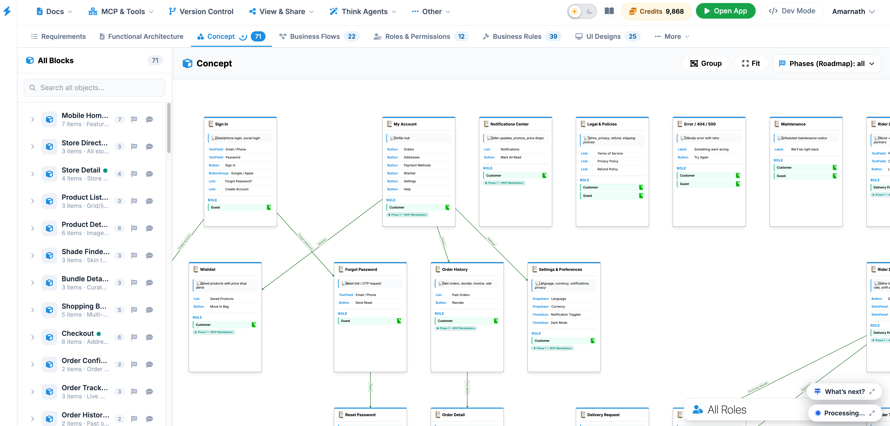

Concepts
The Concept tab provides an interactive node canvas that visualizes the logical structure, relationships, and component blocks across your application.
Key UI Components
- All Blocks Sidebar: Lists all 71 conceptual objects (such as Mobile Home, Store Directory, Checkout, and Order Tracking) with quick-filter controls and a search bar.
- Concept Visual Canvas: Interconnected diagram cards representing individual app pages and states, showing relational dependencies and data pathways between modules.
- Canvas Toolbar: Top-right controls including Group (organize related nodes), Fit (re-center canvas), Phases (Roadmap) filter, and a bottom All Roles selector to view system flows by user permissions.
To verify the details of any element, select its card on the canvas or click its name in the sidebar list to center and focus on it.
